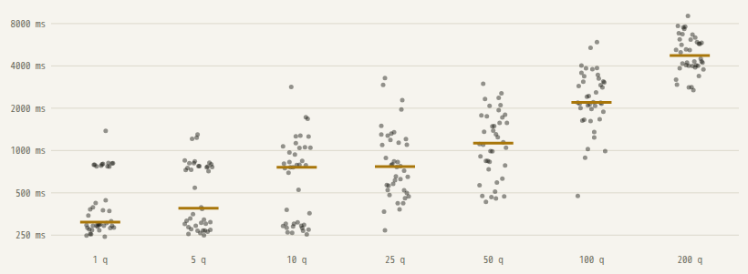

Nothing matches. Clear the search or pick another category.
a curated list · not affiliated with TypeSafe AI
Jev is TypeSafe's System One model. It does not write text: you send a state and typed questions, and get probabilities back. Launch week produced hundreds of repos. We read them so you do not have to.
noul Was every entry read before it was listed?
choice How was it curated?
score Are stars a criterion?
Nothing matches. Clear the search or pick another category.

Bigger and broader than this one. Use them as a worklist, open each repo before trusting it.